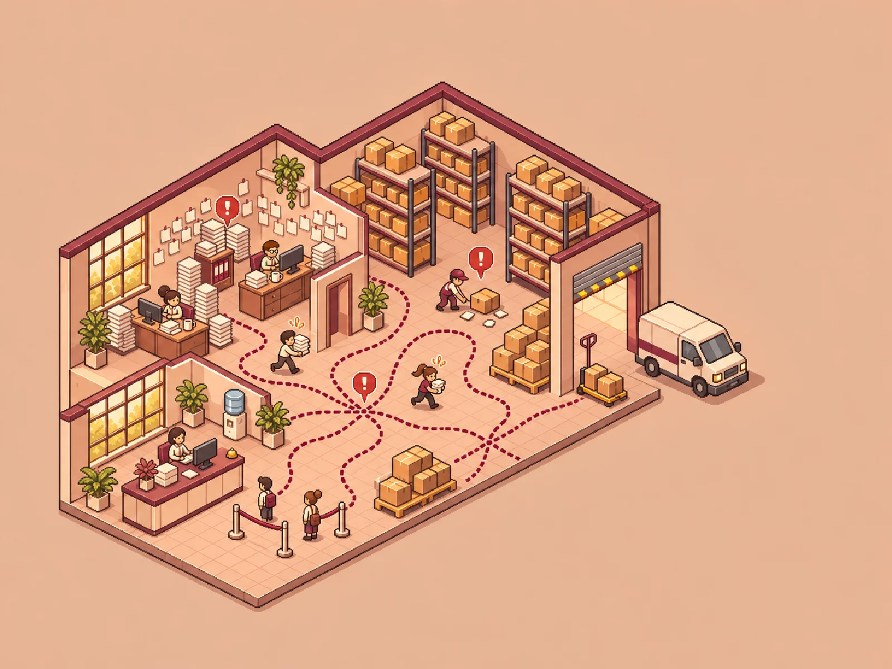
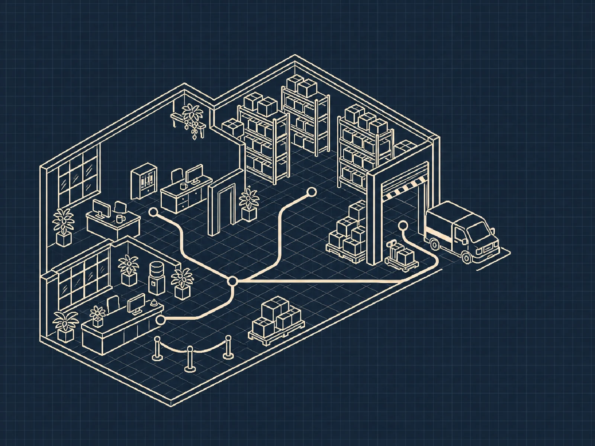
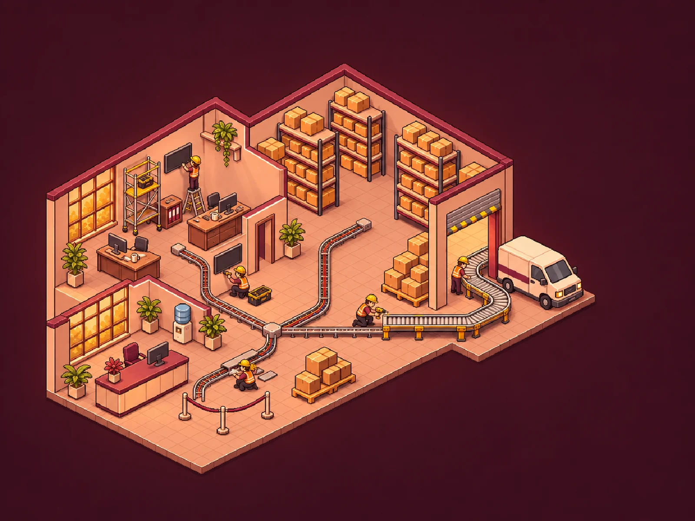
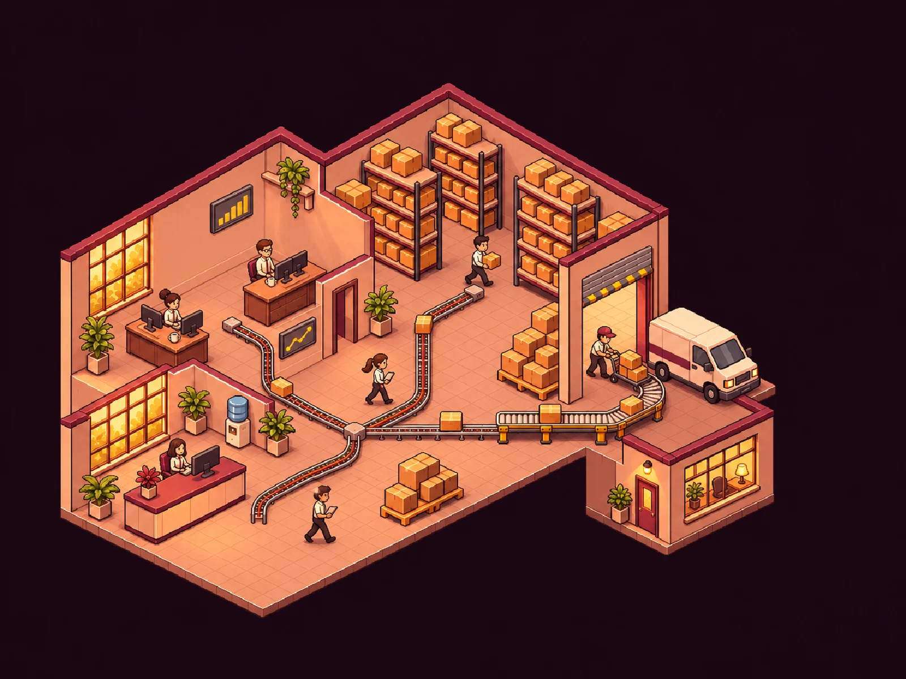

Спочатку бізнес.
Потім — код.
Marline розробляє сайти, цифрові продукти й внутрішні системи. Спершу розбираємося, як працює ваш бізнес, а потім створюємо рішення, які допомагають йому працювати краще.
Як ми працюємо
Чотири кроки, і кожен має зрозумілий результат. На ілюстраціях видно, як змінюється бізнес на кожному з них.
-
01Занурюємося
Розбираємо ваш бізнес на частини: люди, щоденні дії, обмеження та цілі. Ставимо запитання, поки не стане зрозуміло, як усе працює зараз.
РезультатСпільне розуміння задачі й того, що має змінитися
-
02Проєктуємо
Складаємо з цих частин структуру рішення: сценарії, зв’язки й пріоритети. Логіку перевіряємо на макетах, поки зміна коштує хвилини, а не тижні.
РезультатЗрозуміла структура рішення та погоджені пріоритети
-
03Розробляємо
Збираємо погоджене в робоче рішення й перевіряємо основні сценарії. Кожна технічна деталь працює на бізнес-задачу.
РезультатРобоче рішення, яке можна перевірити у потрібних сценаріях
-
04Розвиваємо
Запуск — це не фінал. Враховуємо зворотний зв’язок і зміни в бізнесі та додаємо те, що справді потрібно далі.
РезультатНаступні пріоритети, що відповідають реальній роботі бізнесу




Що ми робимо
Масштаб визначає задача. Спочатку розуміємо її, потім обираємо інструменти.
Сайти та цифрові продукти Від першої сторінки до складних вебсервісів
Створюємо цифрові точки взаємодії між бізнесом і людьми. Продумуємо структуру, сценарії та функції відповідно до задачі.
- Сайти компаній і продуктів
- Особисті кабінети
- Вебсервіси
Внутрішні системи Інструменти для команди та щоденних операцій
Допомагаємо впорядкувати роботу, дані та взаємодію команди. Проєктуємо систему навколо реальних процесів, а не навпаки.
- Облік замовлень і даних
- Робота з документами
- Інструменти команди
Автоматизація та інтеграції Менше повторюваної ручної роботи
Поєднуємо сервіси та допомагаємо даним рухатися між ними. Знаходимо повторювані дії, які доцільно передати системі.
- Поєднання сервісів
- Передавання даних
- Автоматизація операцій
Розвиток готових рішень Наступний крок для того, що вже працює
Вивчаємо наявне рішення, його контекст і обмеження. Визначаємо, що варто зберегти, змінити або поступово покращити.
- Аудит поточного рішення
- Нові сценарії та функції
- Поступові покращення
Цей сайт: від макета до сторінки
Реальних кейсів ми тут поки не показуємо. Зате можна побачити, як змінювався цей сайт: від першого макета до сторінки, яку ви зараз гортаєте.

До першої розмови
Не обов’язково мати всі відповіді, щоб почати.
Інт. Перша розмова. День
Ви приходите з ідеєю або з процесом, який заважає. Готового ТЗ може й не бути, це нормально.
ВиЩо робити, якщо ще немає готового ТЗ?
Почнемо з контексту: яку задачу ви хочете вирішити, для кого й що відбувається зараз. Цілі та процеси допоможуть поступово сформувати вимоги до рішення.
ВиЧи можна почати з невеликої задачі?
Так. Масштаб визначає задача: це може бути окрема функція, процес або перша версія продукту. Спочатку з’ясуємо, який обсяг має сенс саме зараз.
ВиА якщо система вже існує?
Спочатку вивчаємо її поточну роботу та обмеження. Разом визначаємо, що варто змінювати, що зберегти та як рухатися далі.
ВиЩо підготувати до першої розмови?
Коротко опишіть ідею або поточну проблему, майбутніх користувачів і очікуваний результат. Якщо є приклади процесу чи наявного рішення, вони допоможуть зрозуміти контекст.
Є процес, який хочеться змінити?
Контакти з’являться тут найближчим часом